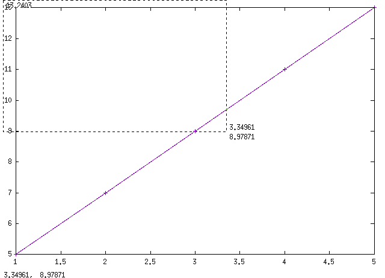
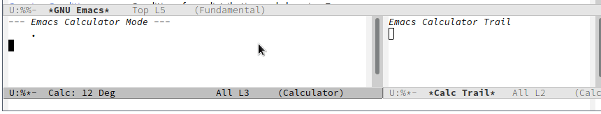
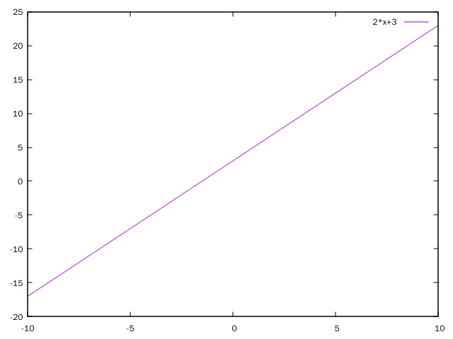

使用Calc进行线性拟合
今天又发现Calc的一个牛逼功能：进行线性拟合，其步骤如下:
以矩阵的形式输入待拟合的数据，其中每一行表示一个自变量的值，最后一行表示因变量的值。
比如，对于公式
Y=aX_1 + bX_2 + bX_3 +d, 那么输入的矩阵就应该是这样的:[[ x1_1, x1_2, x1_3, x1_4 ...] [ x2_1, x2_2, x2_3, x2_4 ...] [ x3_1, x3_2, x3_3, x3_4 ...] [ y_1 , y_2 , y_3 , y_4 ...]]
为了简单，我这里假设数据为
[[ 1, 2, 3, 4, 5 ] [ 5, 7, 9, 11, 13 ]]
- (可选操作)我们可以调用gnuplot来根据这些数据画出散点图
按下
v u将矩阵分解成多个数组，Calc显示如下2: [1, 2, 3, 4, 5] 1: [5, 7, 9, 11, 13] .按下
g f进行快速做图，得到结果
可以看出这些数据可以很好的你合成一个直线
- 按下
U回退成原始数据
- 按下
a F(calc-curve-fit) 调用拟合命令， 选择拟合模型
Calc的拟合命令支持多种拟合模型，因此会要求我们选择想要的拟合模型(按?可以查看支持的模型),我们这里选
1表示线性拟合选择自变量和参数的表示符号
这里直接回车，选择默认的符号(
x;a,b, 分号前的符号为自变量符号，分号后的符号为参数符号，符号之间用逗号分隔)。- 得出结果
2. x + 3.

我们还可以在Calc中调用gnuplot进行做图:
- 按下
g C(calc-graph-command) - 输入
plot 2*x+3回车得到图片
